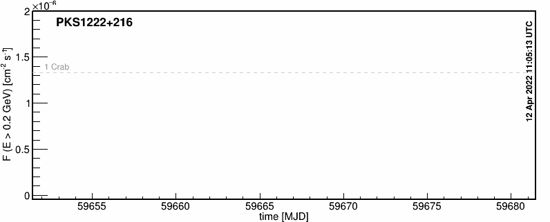
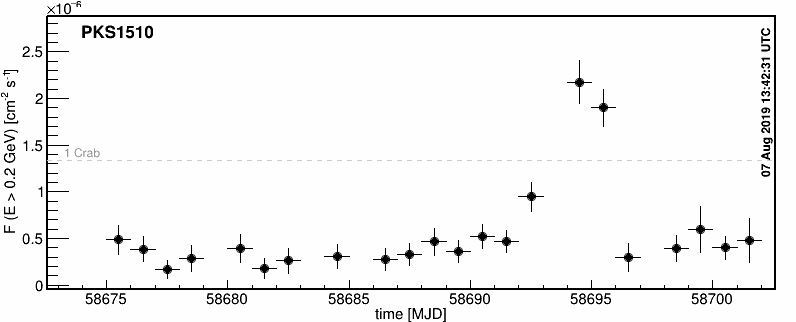
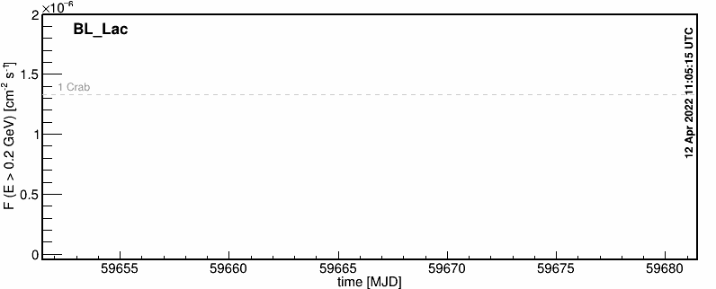

Blazar monitoring @ Barnard
The Fermi Gamma-ray Space Telescope regularly surveys the entire sky in the energy range between 0.1 and 300 GeV with an homogeneous coverage. This makes Fermi a very useful guide for ground-based Cherenkov-telescope arrays like VERITAS, that are sensitive at energies above 100 GeV.
Our monitoring program includes the flat spectrum radio quasars 3C
279, PKS 1222+216 and PKS 1510-089, and the low-frequency-peaked BL Lac
BL Lacertae.



A detailed description of our Fermi-LAT analysis algorithms can be
found here.
VERITAS research at Barnard is
supported by the U.S. National Science Foundation. Fermi research at
Barnard is supported by grants from NASA.
Contact
Manel Errando
Department of Physics and Astronomy
Barnard College, Columbia University
3009 Broadway, New York, NY 10027, USA
email: errando(at)astro.columbia.edu